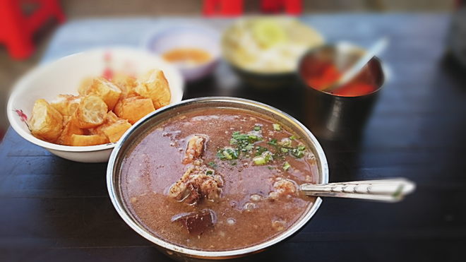

Quán cháo lòng bà Út

Hơn 80 năm nay, gánh cháo lòng Cô Út trên đường Cô Giang – quận 1, là địa chỉ quen thuộc của thực khách ở Sài Gòn. Với hương vị đậm đà, vừa vặn mà ai ăn cũng khen nức nở món cháo của bà. Đây là một trong các quán ăn ngon Sài Gòn mà bạn nên thưởng thức.
Xem Thêm...- Địa chỉ: 46A Đinh Công Tráng, phường Tân Định, quận 1
- Giờ mở cửa: sáng từ 10h00 -14h00, chiều từ 16h00 – 21h00
- Giá bán: 50.000 đồng – 100.000 đồng.